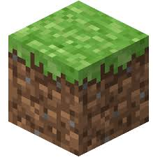
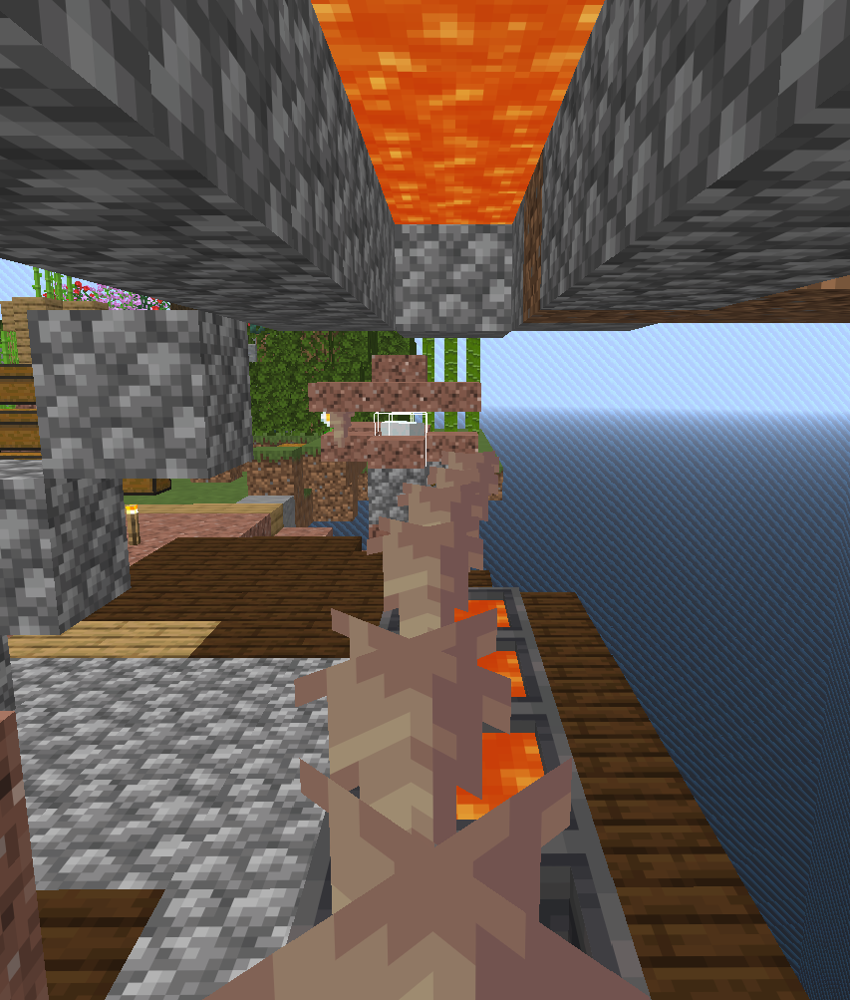
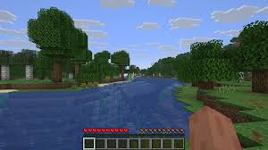

🌊 Always Carry a Water Bucket
A water bucket is one of the most versatile tools in survival Minecraft. Use it to break your fall from any height by placing water directly below you just before impact (MLG water bucket). It also helps you escape lava, create temporary bridges, and fight off blazes in the Nether.

🌋 Infinite Lava Farm
You can create an infinite lava source by placing a cauldron below a pointed dripstone block that has lava above it. The lava slowly drips down and fills the cauldron, giving you a renewable lava supply without needing to travel to the Nether. This is ideal for fuelling furnaces in large quantities.

🛏️ Set Your Spawn Point Early
Always set your spawn point by sleeping in a bed as soon as possible. If you die before sleeping, you'll respawn at the world spawn — potentially thousands of blocks away. Keep spare beds in your inventory when exploring, and set a spawn point at every major base or outpost you build.

🍗 Food Priority
Keep your hunger bar full — below 18/20 hunger your health stops regenerating, and below 6/20 you can't sprint. The best early-game foods are cooked chicken, steak, and bread. Later, set up an automatic food farm (wheat, carrots, potatoes) so you never run out. Golden carrots are the best long-term food if you have the resources.
🔦 Light Up Your Base
Hostile mobs spawn in areas with a light level of 0. Place torches, lanterns, or glowstone all around your base and farm areas to prevent mob spawning. Redstone torches don't count as light sources for preventing spawns, so always use regular torches, sea lanterns, or shroomlights.

✅ Collect at least 20 wood logs before dark
✅ Craft a crafting table, wooden pickaxe → stone pickaxe immediately
✅ Find or dig a small shelter — even a dirt hole works
✅ Craft a bed if you can find 3 wool from sheep
✅ Always have torches inside and outside your shelter